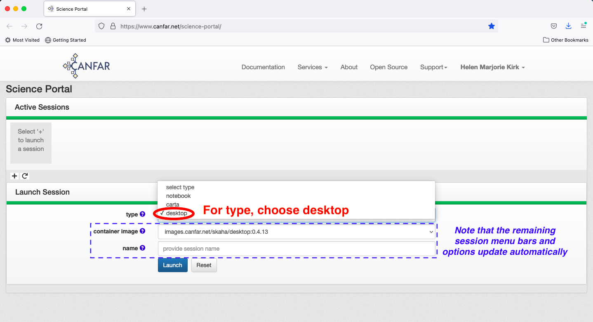
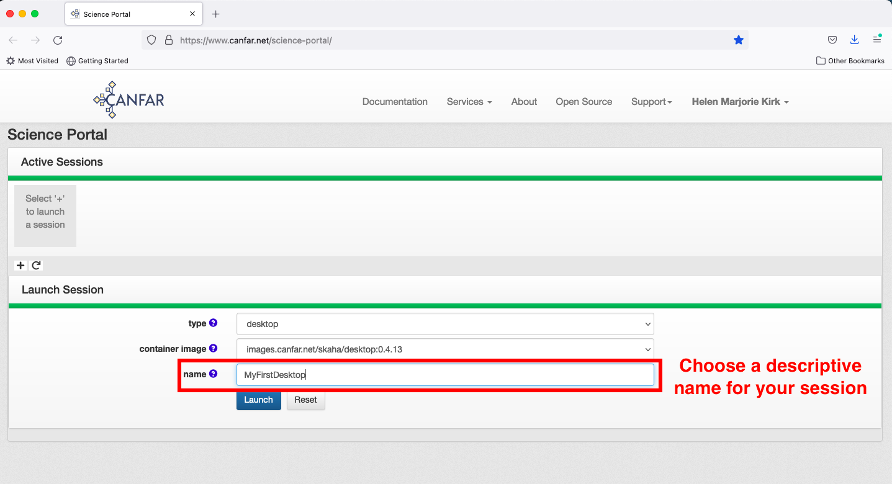

Launching a Desktop session¶
After logging in to the science portal and clicking the plus sign to launch a new session, choose a session type of ‘desktop’

Note that the remaining menu bars and options update automatically after your session type selection. There is currently only one option for ‘container image’, so no selection is needed.

Give your session a descriptive name; this will later appear on your Science Portal page if you need to log in again later

Now, hit the launch button and wait for your session to launch

Congratulations! You’ve started your first session. You are automatically returned to the main science portal page, where your desktop session appears as an icon, with your chosen descriptive name. Access the session by clicking on the icon.

This takes you to the landing page for your Desktop session. Click the connect button to connect to the session. When you session becomes inactive for some time, you are automatically returned to this page, but you can return to the session exactly where you left off by once again clicking the connect button.


As you can see, this desktop session has a similar look and feel to a standard linux desktop that you may be familiar with. See the main page for tutorials on using various aspects of the Desktop session, including launching a CASA-enabled terminal.